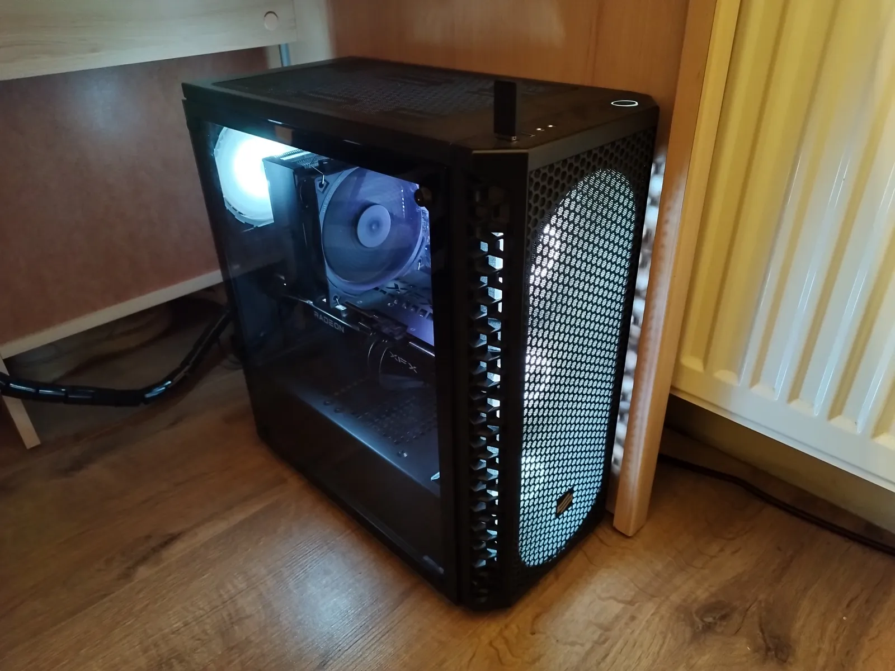
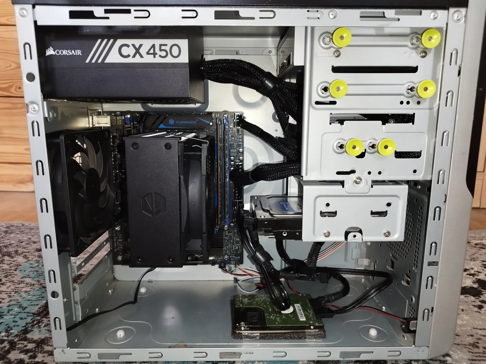

Hardware
The machines I use every day — desktop build, daily driver laptop, Proxmox server, and phone.
- Total cores 34 cores 48 threads across 4 devices
- Combined memory 78 GB RAM ECC DDR4 + DDR4 + Unified + LPDDR4X
- Total storage ~2.7 TB NVMe SSDs + Proxmox HDD array
- Operating systems 3 platforms Linux · macOS · Android
Gear
My machines
Full component breakdown with key specs from each part.
-
Custom build · 2022
Main PC running Artix Linux with SwayFX wm — assembled in 2022.
- Ryzen 5 5600
- RX 6700 10 GB
- 16 GB DDR4-3200
- 1 TB NVMe
- 600 W 80+ Bronze

- CPU
- AMD Ryzen 5 5600Zen 3 / Vermeer, 6C/12T, 3.5–4.4 GHz, 32 MB L3, 65 W TDP, AM4, unlocked
- GPU
- XFX Speedster SWFT 309 RX 6700RDNA 2, 2304 SP, 10 GB GDDR6 @ 16 Gbps (160-bit, 320 GB/s), boost up to ~2425 MHz, triple-fan, HDMI + 3× DP
- RAM
- Kingston FURY Beast RGB — 16 GBDDR4-3200 · CL16 (16-18-18) · ~1.35 V · Intel XMP 2.0
- Storage
- WD Blue SN570 1 TBM.2 2280 NVMe, PCIe 3.0 ×4, up to ~3500/3000 MB/s read/write, TLC, ~600 TBW, 5-year warranty
- Board
- ASUS TUF Gaming B550-PlusAM4 ATX, B550, 8+2 DrMOS VRM, 4× DDR4 (max 128 GB), PCIe 4.0 ×16, dual M.2, 2.5 GbE, USB 3.2 Gen 2
- PSU
- SilentiumPC Vero M3 Bronze 600 WATX, 80 PLUS Bronze (~90% @ 50% load), semi-modular, single +12 V rail up to ~588 W
- Cooler
- SilentiumPC Fera 5Tower air cooler, 4× heatpipes, Fluctus 120 PWM (300–1800 RPM), rated ~220 W TDP
- Case
- SilentiumPC Signum SG1V EVO TG ARGBATX mid-tower (~447×216×413 mm), tempered glass, 4× Stella HP ARGB 120 mm included, GPU clearance ~325 mm
-
MacBook Air 13″ · M5 · base
Portable machine for school and on-the-go work.
- Apple M5 (10C)
- 16 GB Unified
- 512 GB SSD
- 13.6″ Liquid Retina
- Wi-Fi 7 · 1.24 kg
- Chip
- Apple M510-core CPU (4 performance + 6 efficiency), 8-core GPU, 16-core Neural Engine, ~153 GB/s memory bandwidth
- Memory
- 16 GB unified memoryBase configuration
- Storage
- 512 GB SSDBase; Apple claims ~2× faster vs previous Air gen
- Display
- 13.6″ Liquid Retina IPS2560×1664 @ 224 ppi, 500 nits, 60 Hz, P3 wide color
- Battery
- Up to ~18 h video / ~15 h webApple wireless web & streaming rating
- I/O
- 2× Thunderbolt 4 · MagSafe · 3.5 mmWi-Fi 7 (N1) · Bluetooth 6 · ~1.24 kg
-
Proxmox server
Home lab box for VMs and containers — usually runs headless. If you need hosting, VM, VPS or a website dm me on IG or send me an email.
- Xeon E5-2630L v4
- 10C / 20T · 55 W
- 40 GB ECC RDIMM
- NVMe + 2× WD HDD

- CPU
- Intel Xeon E5-2630L v4Broadwell-EP, 14 nm, 10C/20T, 1.8–2.9 GHz, 25 MB L3, 55 W TDP, LGA 2011-3, DDR4 ECC
- GPU
- NVIDIA GeForce GT 440Fermi GF108-class entry GPU (~96 CUDA, ~65 W); used only for BIOS, then headless
- RAM
- 40 GB ECC registered DDR4 (RDIMM)Dual-channel on this board, CPU supports DDR4-1600/1866/2133
- Storage
- Samsung 970 EVO OEM 256 GB NVMe + 2× WD HDDPCIe 3.0 ×4, Phoenix controller, ~3400/1500 MB/s class · WD 2.5″ 512 GB HDD · WD 3.5″ 320 GB HDD
- Board
- Huananzhi X99-P4FmATX (215×185 mm), LGA 2011-3, 4× DDR4 (max 128 GB), 2× M.2 NVMe PCIe 3.0 ×4, 4× SATA 3 Gb/s, 1× PCIe 3.0 ×16, Realtek GbE, 6-phase VRM
- PSU
- Corsair CX450 — 450 WATX, 80 PLUS Bronze, non-modular, ~100k h MTBF rating
- Cooler
- Endorfy Fera 5Same Synergy Cooling design as SilentiumPC Fera 5; 4× heatpipes, 120 mm PWM, ~220 W TDP class
- Case
- Reused mATX office chassismATX case reused from an old office PC
-
Xiaomi Redmi Note 11 Pro 5G · 6/128
Daily driver phone.
- Snapdragon 695 5G
- 6.67″ 120 Hz AMOLED
- 108 MP Main Cam
- 5000 mAh · 67 W
- Chipset
- Qualcomm Snapdragon 695 5G (SM6375, 6 nm)2× Kryo 660 @ up to 2.2 GHz + 6× @ 1.7 GHz · Adreno 619
- Display
- 6.67″ Super AMOLED DotDisplay1080×2400, 120 Hz, ~395 ppi, DCI-P3, HBM ~700 nits / peak ~1200 nits, Gorilla Glass 5
- Memory
- 6 GB LPDDR4X + 128 GB UFS 2.2microSD expandable (shared SIM slot)
- Camera
- 108 MP f/1.9 wide (1/1.52″)+ 8 MP ultrawide 118° + 2 MP macro · 16 MP front
- Battery
- 5000 mAh67 W wired turbo charge (USB-C)
- Body
- ~164.2 × 76.1 × 8.1 mm · ~202 gDual speakers · 3.5 mm jack · side fingerprint · Bluetooth 5.1 / Wi-Fi 5